Chem 3240 · Lecture 3.4
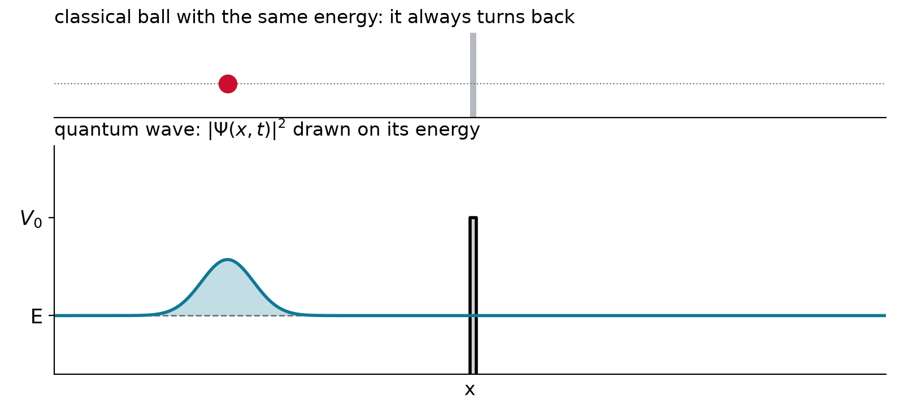
\frac{d^2\psi}{dx^2} = \frac{2m}{\hbar^2}\,\big(V - E\big)\,\psi
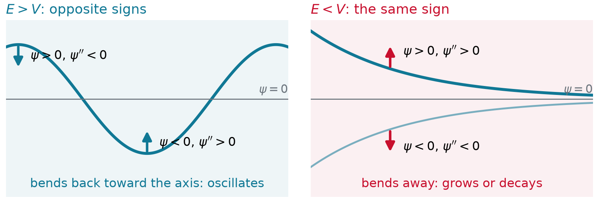
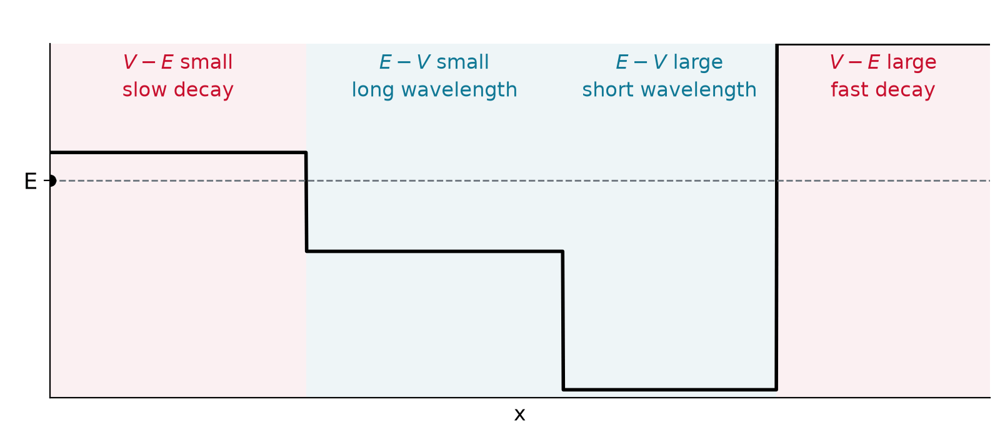
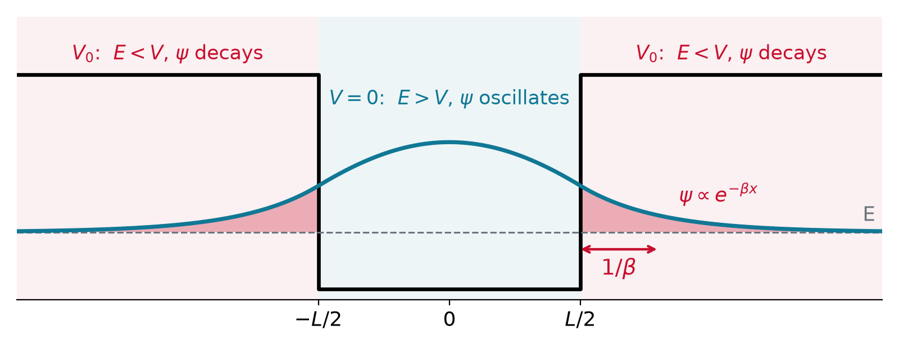
\begin{aligned} \text{well:}\quad \psi'' &= -k^2\psi, & k &= \sqrt{2mE}\,/\,\hbar \\ \text{walls:}\quad \psi'' &= +\beta^2\psi, & \beta &= \sqrt{2m(V_0-E)}\,/\,\hbar \end{aligned}
\begin{array}{lll} \text{I:} & x < -\tfrac{L}{2} & \psi_{I} = A\,e^{\beta x} \\[6pt] \text{II:} & |x| < \tfrac{L}{2} & \psi_{II} = B\cos kx + C\sin kx \\[6pt] \text{III:} & x > \tfrac{L}{2} & \psi_{III} = D\,e^{-\beta x} \end{array}
Even state: differentiate each piece
\begin{aligned} \text{inside:}\quad \psi &= B\cos kx, & \psi' &= -kB\sin kx \\ \text{wall:}\quad \psi &= D\,e^{-\beta x}, & \psi' &= -\beta D\,e^{-\beta x} \end{aligned}
Set them equal at x = L/2:
\begin{aligned} \text{value:}\quad B\cos\tfrac{kL}{2} &= D\,e^{-\beta L/2} \\ \text{slope:}\quad kB\sin\tfrac{kL}{2} &= \beta D\,e^{-\beta L/2} \end{aligned}
\frac{\text{slope}}{\text{value}}: \quad \beta = k\tan\frac{kL}{2} \qquad (B,\ D \text{ cancel})
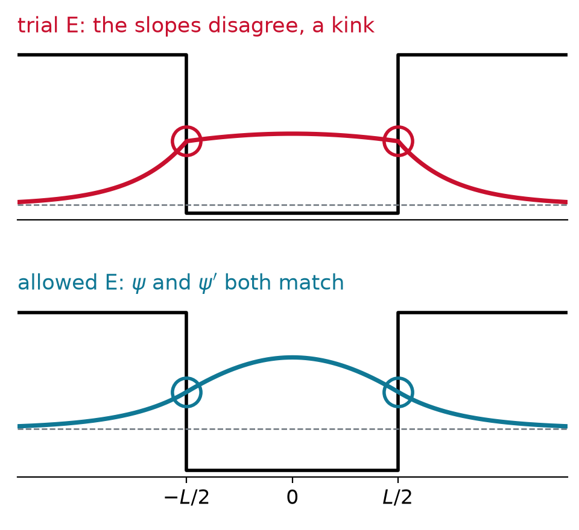
The same steps with C\sin kx give the odd states:
\text{even: } \beta = k\tan\frac{kL}{2} \qquad\qquad \text{odd: } \beta = -k\cot\frac{kL}{2}
\text{even: } \eta = z\tan z, \qquad \text{odd: } \eta = -z\cot z, \qquad z^2 + \eta^2 = z_0^2
z = \frac{kL}{2}, \qquad \eta = \frac{\beta L}{2}, \qquad z_0 = \frac{L}{2}\,\frac{\sqrt{2mV_0}}{\hbar}
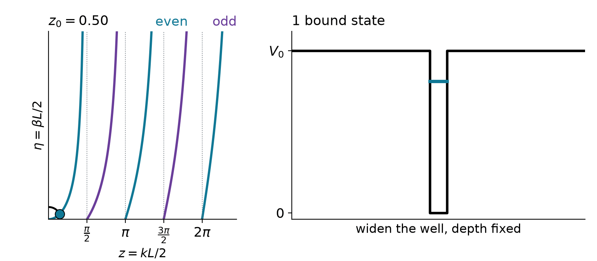
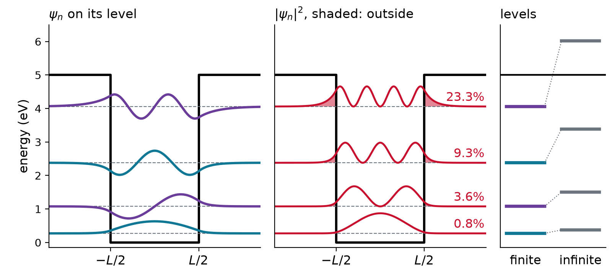
An electron sits 1 eV below the top of a wall. How far into the wall does \psi reach? And a proton?
\frac{1}{\beta} = \frac{\hbar}{\sqrt{2m(V_0 - E)}} = \begin{cases} 1.95\ \text{Å} & \text{electron} \\[4pt] 0.046\ \text{Å} & \text{proton: } \sqrt{1836} = 43 \text{ times shorter} \end{cases}
An electron leaks about the radius of an atom. A proton barely leaks at all.
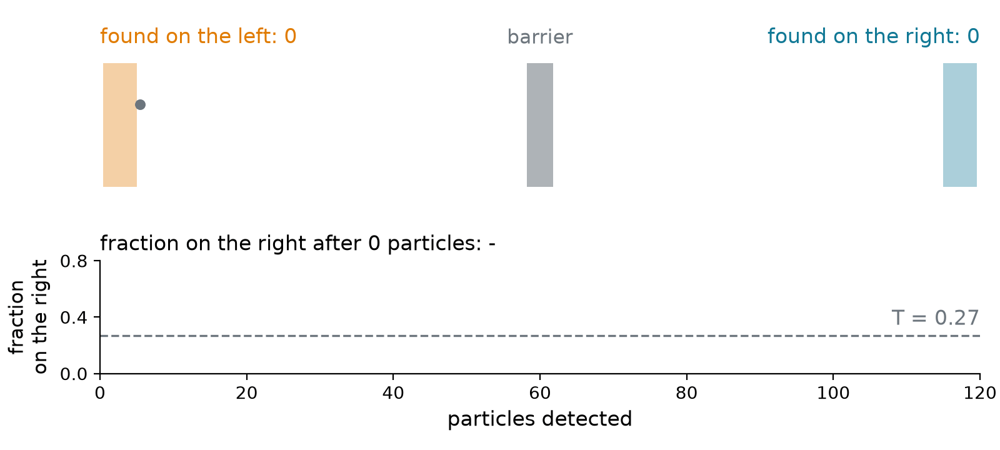
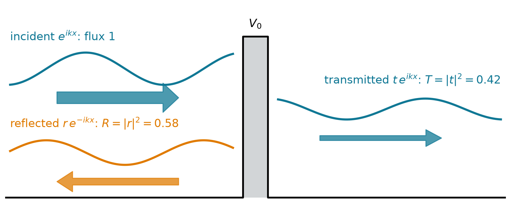
T = \frac{\text{transmitted flux}}{\text{incident flux}} = |t|^2, \qquad R = |r|^2, \qquad R + T = 1
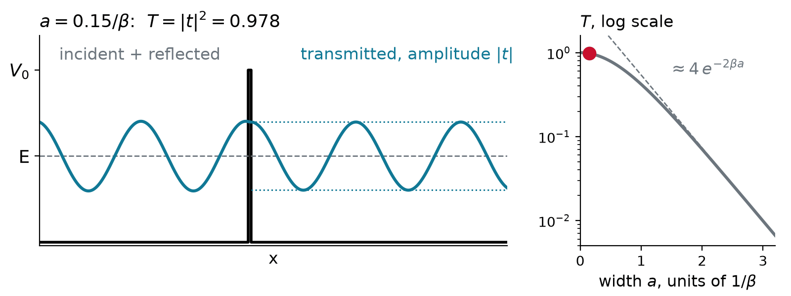
Matching \psi and \psi' at x = 0 and x = a gives t. For a thick barrier:
T = |t|^2 \approx 16\,\frac{E}{V_0}\left(1 - \frac{E}{V_0}\right)e^{-2\beta a} \qquad (\beta a \gg 1)
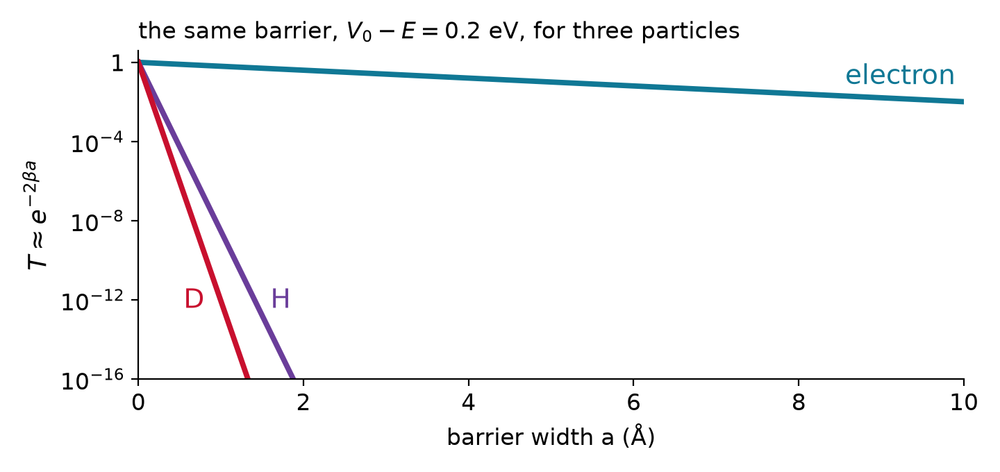
An H atom transfers through a barrier 0.2 eV above its energy and 0.5 Å wide. Compare T for H and D.
\begin{aligned} \text{H:}\quad 2\beta_H a &= 9.82 & T_H &\approx e^{-9.82} = 5.4\times10^{-5} \\ \text{D:}\quad 2\beta_D a &= \sqrt{2}\,(9.82) = 13.9 & T_D &\approx e^{-13.9} = 9.4\times10^{-7} \end{aligned}
\frac{T_H}{T_D} = e^{(\sqrt{2}-1)(9.82)} = 58 \approx 60
Doubling the mass multiplies \beta by \sqrt{2}, and the exponent does the rest.
T \approx e^{-2\beta a} for an electron, a proton and a deuteron facing the same barrier
{
const parts = [
{name: "electron", m: 1, c: "#107895"},
{name: "proton (H)", m: 1836.15, c: "#6a3d9a"},
{name: "deuteron (D)", m: 3670.48, c: "#C8102E"}
];
const lg = (m, a) => -2 * 0.5123 * Math.sqrt(m * dE) * a / Math.LN10; // log10 of e^(-2 beta a), beta in 1/Angstrom
const as = d3.range(0, 10.001, 0.01);
const rows = parts.flatMap(p => as.map(a => ({a, y: lg(p.m, a), name: p.name})).filter(r => r.y >= -16));
const pts = parts.map(p => ({a: aw, y: Math.max(-16, lg(p.m, aw)), name: p.name}));
return Plot.plot({
width: 1000, height: 330, marginLeft: 60,
x: {domain: [0, 10], label: "barrier width a (Å)"},
y: {domain: [-16, 0], label: "log₁₀ T", ticks: [0, -4, -8, -12, -16]},
color: {domain: parts.map(p => p.name), range: parts.map(p => p.c), legend: true},
marks: [
Plot.ruleX([aw], {stroke: "#6c757d", strokeDasharray: "4,3"}),
Plot.line(rows, {x: "a", y: "y", stroke: "name", strokeWidth: 2.5}),
Plot.dot(pts, {x: "a", y: "y", fill: "name", r: 7})
]
});
}{
const lg = m => -2 * 0.5123 * Math.sqrt(m * dE) * aw / Math.LN10;
const sci = y => {
const e = Math.floor(y);
return (e >= -2 && e <= 3) ? (10 ** y).toPrecision(2) : `${(10 ** (y - e)).toFixed(1)}×10<sup>${e}</sup>`;
};
return md`electron **${sci(lg(1))}** · proton **${sci(lg(1836.15))}** · deuteron **${sci(lg(3670.48))}** · H gets through **${sci(lg(1836.15) - lg(3670.48))}** times as often as D`;
}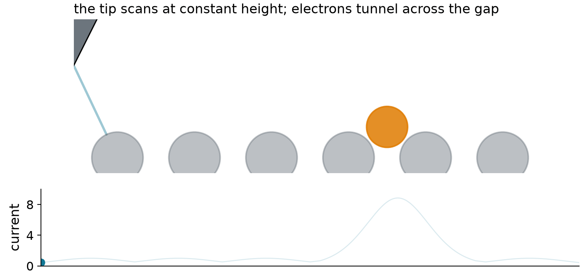
For a metal with work function \phi = 4.5 eV, by what factor does the current grow when the tip moves 1 Å closer?
\beta = \frac{\sqrt{2m_e\phi}}{\hbar} = 1.09\ \text{Å}^{-1} \quad\Longrightarrow\quad \frac{I(d - 1\,\text{Å})}{I(d)} = e^{2\beta\,(1\,\text{Å})} = e^{2.17} \approx 9
A height change of 0.01 Å moves the current by 2%, which the electronics read easily.
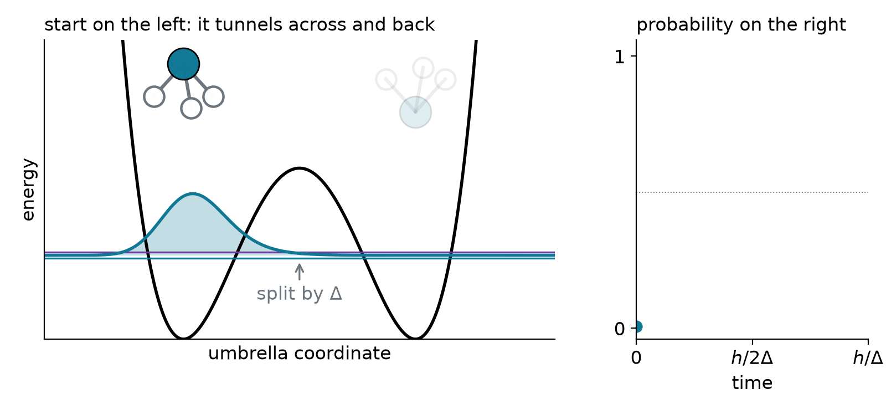
Where E > V the wavefunction bends toward the axis and oscillates; where E < V it bends away and decays over about 1/\beta. Joining \psi and \psi' at the walls allows a finite well only a limited set of levels, each a little lower than in the infinite box. A barrier passes the fraction T = |t|^2 of the incident flux, T \approx e^{-2\beta a}, exponential in the width and in \sqrt{m}: electrons tunnel nanometers, protons fractions of an ångström, the STM sees atoms, and ammonia turns inside out.
Chem 3240 · Quantum Mechanics